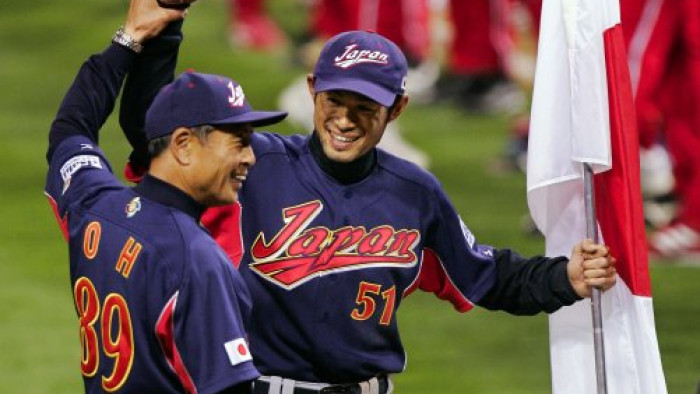

2006
日美之戰八局上的誤判
於複賽日美之戰的八局上半，裁判們判定日本隊的三壘跑者西岡剛在美國隊左外野手 Randy Winn 接殺高飛球之前就先離壘，所以得分不算。當時三壘審前往左外野去監看這個接殺動作，而補位的二壘審判定跑者離壘時機正確，安全回到本壘得分。但是主審在召集其他裁判討論後，改判跑者離壘過早，封殺出局。而慢動作重播畫面清楚地顯示，西岡剛的腳在接殺時還踩在壘包上。但也許是因為他如同教科書一般的再觸壘動作幾近完美，上半身在腳離開壘包之前就開始移動，使得主審產生混淆。由於棒球規則闡明再觸壘動作的最後判定權在主審手中，所以最後的判決就是如此，而美國隊也因為九局下的再見安打而以一分險勝。
